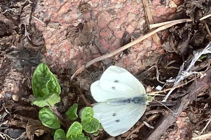
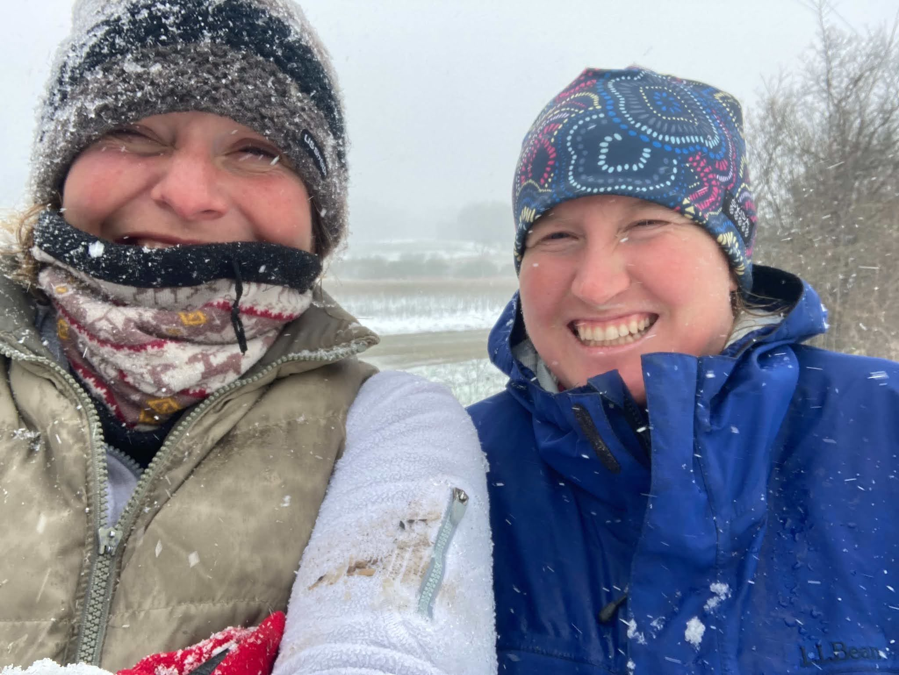
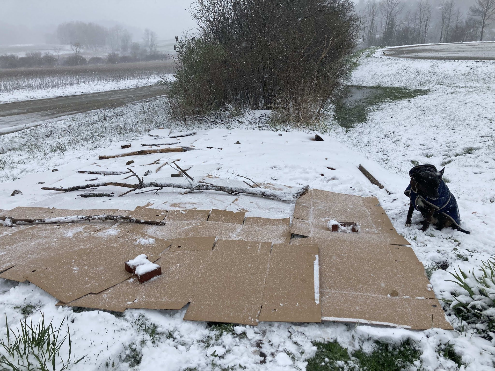
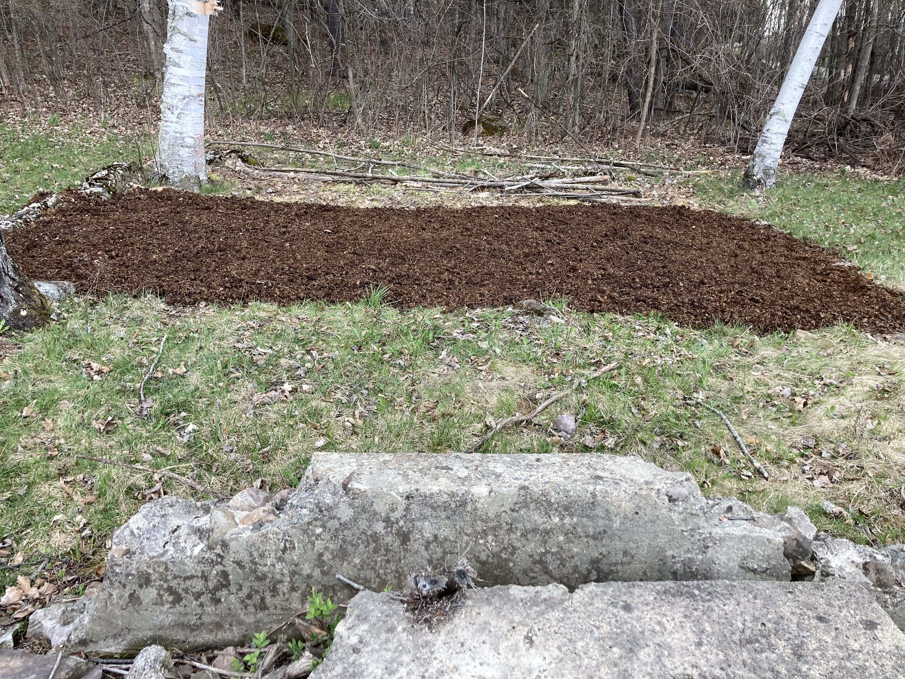
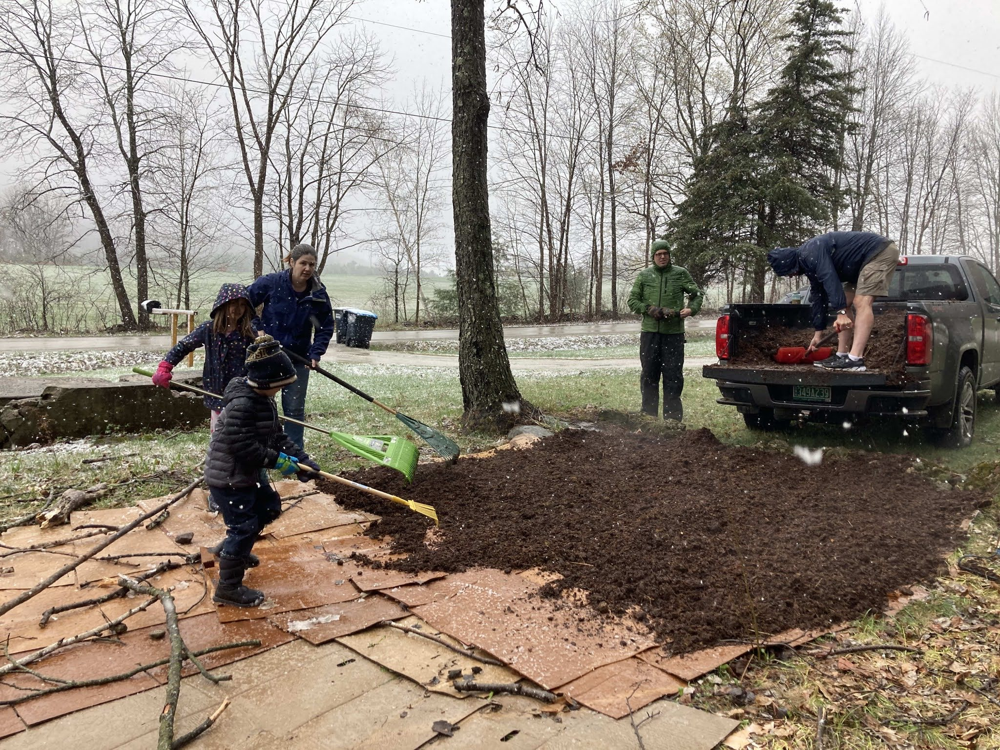
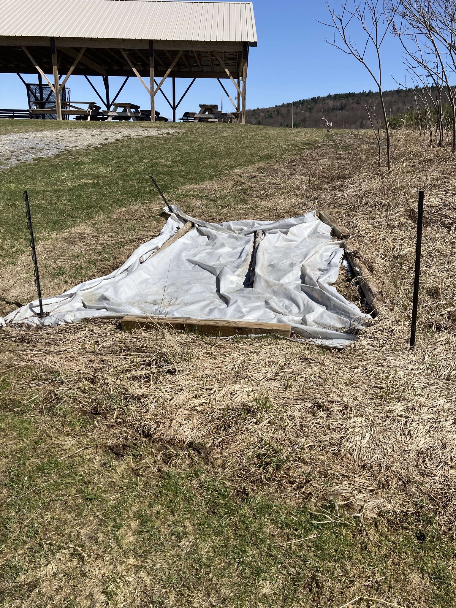

April 2021
Earth Day 2021

Today we celebrate Earth Day with three inches of snow in Charlotte, Vermont. Despite the weather, tree planting and garden installation must go on! It’s been a productive week in the garden, three gardens specifically…
The Pollinator Garden at Fairwinds in Monkton, Vermont:
The pollinator garden at Fairwinds Farm is on the corner of Higbee rd and Covered Bridge rd in Monkon, Vermont. The garden is on private property, however is visible at the intersection. Located across from protected land, the garden will provide food and host plants for local pollinators. A selection of native plants have been identified to begin this garden. PJ and I are attempting to smile for a selfie despite blowing snow, “fair wind” is really living up to it’s name! Fortunately, this garden is going to built with some help from a tractor!


The Friendship Garden at Quaker Corners in Charlotte, Vermont:
The Friendship Garden at Quaker Corners is a pollinator garden on private property. This garden has been established within the remains of a Quaker Schoolhouse located at the corner of Roscoe and Lewis Creek Rd. The remains are simply a staircase and foundation. Within the foundation is a pollinator garden established by our small community. Note the two lovely birches as a backdrop for this lovely location. The whole family came down to help with moving two truckloads of composted manure.


The 4H Pollinator Garden at Morse Park in Monkton, Vermont:
The 4H Pollinator Garden at Morse Park in Monkton, Vermont is a gardening project designed to engage children involved in Monkton’s 4H program to install and successfully plant a garden that feeds pollinators and wildlife. Students will have an opportunity to move soil, install native and pollinator-attracting plants, and engage in observations of wildlife.
The plant list for the garden includes some of Vermont’s Threatened and Endangered Species. These plants have been responsibly sourced and will be planted for the purpose of educating the public and the next generation of gardeners.
Students will plant for butterflies and pollinators to support their entire lifecycle, including annuals like zinnias and sunflowers to provide needed sustenance to adult butterflies later in the gardening season.
Not much to see here, but we did use a solarization method to ensure this garden would be free of invasive plants and undesirable weeds. A stand of milkweed behind the garden remains.

Filed in the garden journal · April 2021